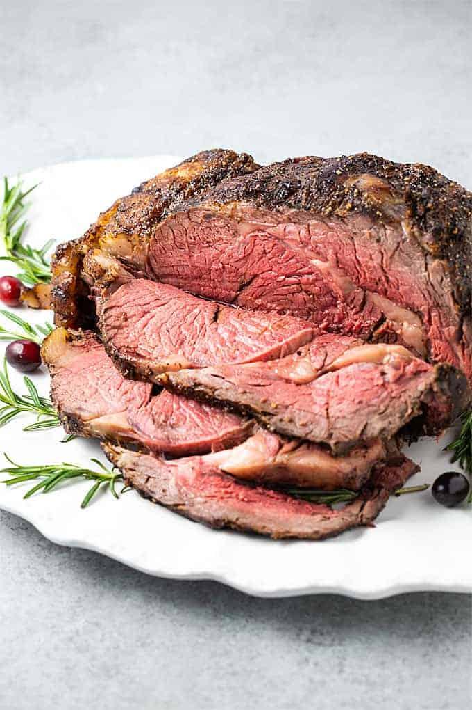

Prime Rib

Prime ribs have always been a staple dish for the holidays. I much prefer it over turkey. I've found that the best method I've used was the reverse sear method popularized by Food Lab
Ingredients
- Prime Rib, preferably good quality or dry aged
- Salt
- Pepper
Steps
- Season prime rib with salt and pepper at least the day before (up to 4 days before)
- Preheat oven to 150 degrees F and place prime rib in oven for 6 hours (or 250 degrees for 3 hours)
- When prime rib reaches internal temperature of 125-130, remove from oven and cover with foil for 30 minutes up to an hour and half
- When ready to serve, turn up oven to 500-550 degrees F and place prime rib in oven for 5-15 minutes